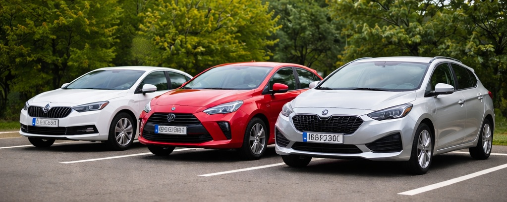
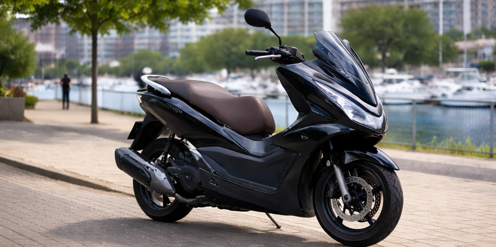
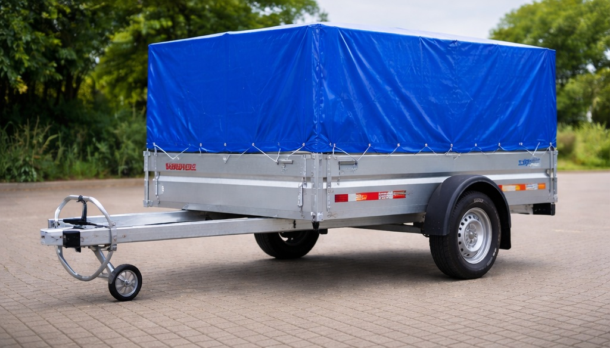

Dysponujemy własną flotą samochodów przeznaczonych do wynajmu – zarówno w ramach ubezpieczenia OC sprawcy, jak i dla klientów naszego serwisu.
Zadzwoń i zapytaj o dostępnośćSamochód zastępczy na czas naprawy – rozliczenie bezgotówkowe z ubezpieczycielem.
Pojazd na czas przeglądu, naprawy lub dłuższej obsługi serwisowej.
Dysponujemy własnymi pojazdami – gwarantujemy dostępność i szybkie wydanie auta.
Możliwość wynajmu skutera 125 cm³. Wystarczy prawo jazdy kategorii B (min. 3 lata) – bez konieczności posiadania kat. A.
Wynajem przyczepki – szczegóły techniczne wkrótce.
Krótko- i długoterminowy wynajem dostosowany do Twoich potrzeb.

Dysponujemy samochodami segmentu A, B i C. Pojazdy dostępne jako auta zastępcze z OC sprawcy oraz dla klientów serwisu.

Dostępny skuter Honda PCX 125. Możliwość prowadzenia na prawo jazdy kategorii B (min. 3 lata).

Przyczepka Temared z plandeką. Idealna do transportu materiałów, sprzętu lub przeprowadzki.
48 624 71 68
Skontaktuj się z nami i sprawdź dostępność.